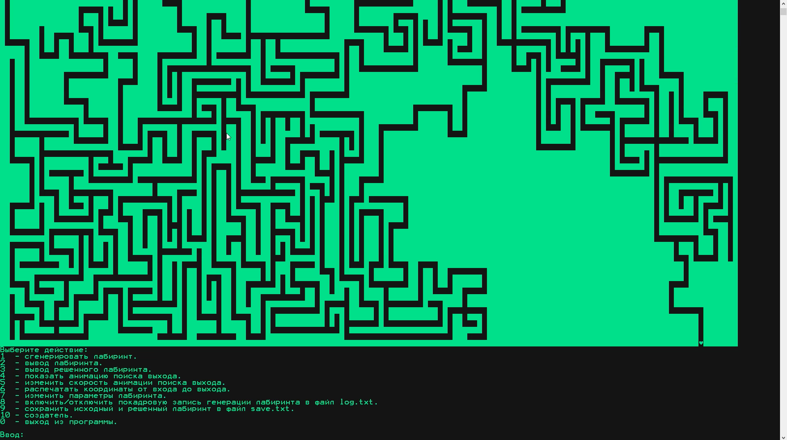
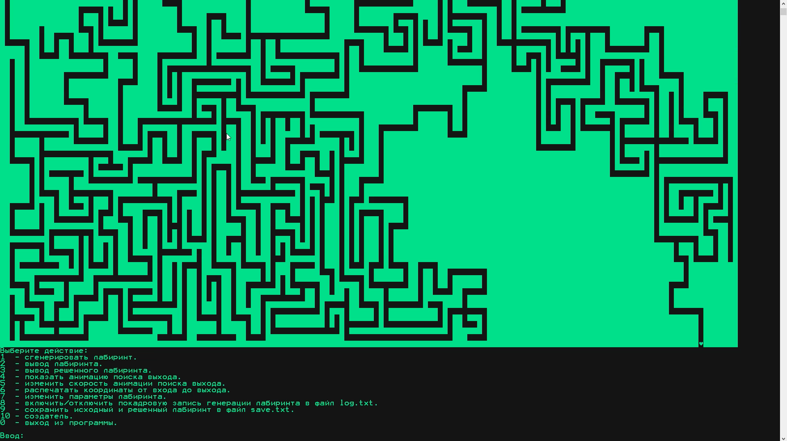

Что это?
Здесь собраны мои некоторые мелкие работы, большинство из них написаны ужасно, но что поделать, все с чего-то начинают. Надеюсь, вы не потеряете сознание от моего г****кода.
ИИ для змейки
В двух словах
Небольшой эксперимент с генетическими алгоримами и нейросетью.
Подробнее
В этой работе я использовал генетические алгоритмы и простейшую нейронную сеть чтобы научить змейку самостоятельно находить яблоки.
Рекорд 66 яблок.
Где посмотреть?
https://github.com/exynil/classic-snake-ai
Скриншоты
На пути к рекорду
Видимые секторы змейки
Translit
В двух словах
Программа для транслитерации документов.
Подробее
Программа связана с переходом казахского языка с кириллицы на латиницу. Приложение транслитерирует документы с кирилицы на латиницу.
Поддерживаемые форматы:
-
Документы Word: doc, docx
-
Таблицы Excel: xls, xlsx
-
Презентации Power Point: ppt, pptx
-
Документы PDF: pdf
-
Документы RTF: rtf
-
Текстовые документы: txt
Идея возникла когда услышал от преподавателя о том как им трудно переделывать уже имеющиеся документы, учебные пособия, презентации, силлабусы на казахском языке с кириллицы на латиницу. Пришел домой написал за вечер маленький прототип, решил удивить преподавателя, преподавателю понравилось. И я продолжил расширять программу, ею начали пользоваться на всей кафедре казахского языка, чему я был очень рад. По их словам, программа сделала массу работы, которую было бы трудно делать в ручную. Я даже не подозревал что она сэкономит людям массу времени. Рад что помог людям. К сожелению преподаватель попросил не распространять программу, из-за чего программа не известна вне моего университета, и просто работает локально на кафедре.
Где посмотреть?
Исходный код недоступен.
Скриншоты


Помощник
В двух словах
Программа шпаргалка для списывания ответов.
Подробнее
Программа написана в помощь мне и моим друзьям сдавать тесты на экзаменах. У меня в университете при сдаче тестов, блокируется доступ к операционной системе программой тестирования. Она перекрывает все обычные окна и это не позволяет студенту открывать браузер или любую другую программу для списывания. Моя программа при наведении мыши, всплывает поверх программы тестирования. Она имеет очень высокую прозрачность, ее спокойно видит студент, но не видит преподаватель издалека. При отведение мыши, программа моментально скрывается. Все что требуется от студента, предварительно подготовить документ шпаргалку для программы и запустить ее перед тестированием.
Где посмотреть?
https://github.com/exynil/Helper
Скриншоты

Лабиринт на С++
В двух словах
Генератор лабиринтов на C++ работающий в консоли
Подробнее
Экзаменационное задание по C++ в Компьютерной Академии ШАГ.
Возможности:
- Геренирация лабиринтов
- Решение лабиринтов
- Сохранение лабиринтов в файл
Где посмотреть?
https://github.com/exynil/labyrinth-cpp
Скриншоты
 
Лабиринт на C#
В двух словах
Генератор лабиринтов на C++ работающий в консоли
Подробнее
Переписал генератор лабиринтов с C++ на C#
Возможности:
- Геренирация лабиринтов
- Решение лабиринтов
- Сохранение лабиринтов в файл
- Редактор лабиринтов
Где посмотреть?
https://github.com/exynil/labyrinth-cpp
Скриншоты

Linear equation
В двух словах
Решение задач линейных уравнений с графическим методом.
Подробнее
Это работа часть одного задания в универе, мне хотелось визуально показать область допустимых значений. Программа может быстро найти область допустимых значений системы линейных уравнений и отрисовать область если решение имеется.
Где посмотреть?
https://github.com/exynil/linear-equation
Скриншоты

i3lock editor
В двух словах
Графический редактор i3lock-color
Подробнее
i3lock-color это блокировщий системы для X11 в GNU/Linux. Настраивать его очень кропотливое занятие, потому мне захотелось сделать визаульный редактор в помощь сообществу. Редактор позволяет полностью изменять внешний вид экрана блокировки и генерировать конфигурацию в двух удобных вариантах.
Где посмотреть?
https://github.com/exynil/i3lock-editor
Скриншоты

Пинг-Понг
В двух словах
Пинг-понг
Подробнее
Эксперементировал с Canvas(HTML)
Где посмотреть?
https://github.com/exynil/ping-pong
Скриншоты

Время
В двух словах
Заставка показывающая день месяц и год в процентах
Подробнее
Эксперементировал с Canvas(HTML)
Где посмотреть?
https://github.com/exynil/time
Скриншоты
Генератор словаря
В двух словах
Генератор словаря
Подробнее
Генерирует словарь для модуля Word Generator в программе Electronics Workbench.
Где посмотреть?
https://github.com/exynil/dictionary-generator
Скриншоты

Тренировка памяти
В двух словах
Тренировка и проверка вашей фотографической памяти
Подробнее
Эксперементировал с Canvas(HTML).
Увидел гифку в соц. сетях как обезьна за банан решает подобный тест. Хотел попробовать пройти сам, но в интренете не нашлось. Пришлось делать самому. Как оказалось у обзъян очень хорошо развита фотографическая память.
Где посмотреть?
https://github.com/exynil/memory-trainer